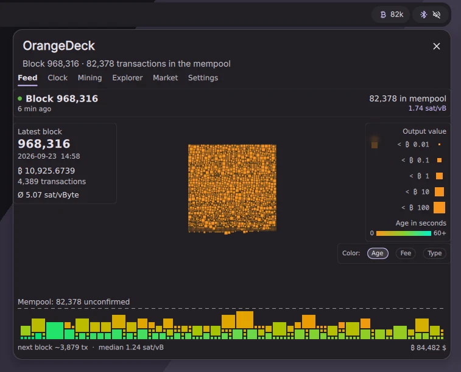

OrangeDeck is listed in the plugin directory of DankMaterialShell as OrangeDeck Bitcoin Dashboard. It installs with one command: dms plugins install orangedeck.
In the bar it sits as a pill with the number of waiting transactions. A click opens a popout with the same views as the app: Feed, Clock, Mining, Explorer and Market. There is also a control center tile and a desktop widget.
The plugin works without the app and fetches its data from mempool.space by itself. If the OrangeDeck app is installed and its service runs, the plugin uses that instead, so all windows share one connection.
It follows the language of DankMaterialShell and speaks the same thirteen languages as the app.
